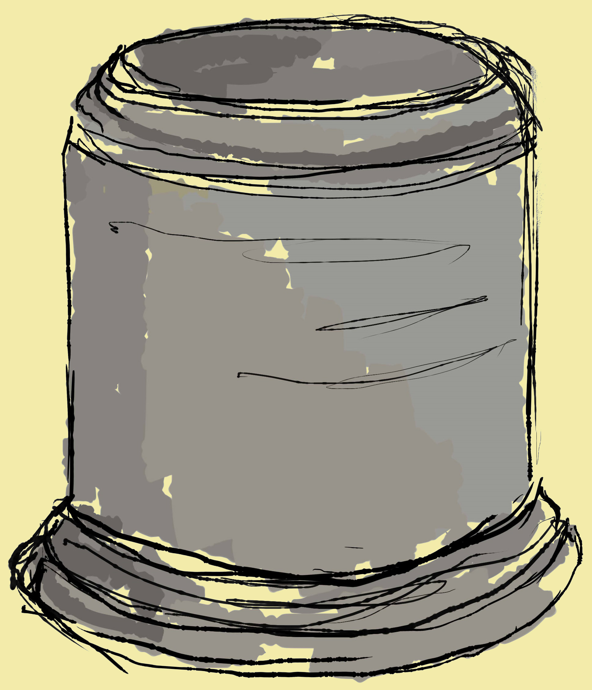

 5. ЧЕЛОБИТНЫЙ СТОЛБ – ЭТО ОДНА ИЗ НЕОБЫЧНЫХ ДОСТОПРИМЕЧАТЕЛЬНОСТЕЙ КОЛОМЕНСКОГО. ОН РАСПОЛОЖЕН НА ГОСУДАРЕВОМ ДВОРЕ, РЯДОМ С ТЕМ МЕСТОМ, ГДЕ РАНЕЕ НАХОДИЛСЯ ДВОРЕЦ АЛЕКСЕЯ МИХАЙЛОВИЧА. НА ЧЕЛОБИТНОМ СТОЛБЕ ВЫВЕШИВАЛИСЬ ЦАРСКИЕ ПРИКАЗЫ, СЮДА ЖЕ ПРИХОЖАНЕ ПРИНОСИЛИ СВОИ ПРОСЬБЫ И ЖАЛОБЫ. ПОЗЖЕ СПЕЦИАЛЬНЫЙ СЛУЖИВЫЙ СОБИРАЛ ВСЕ ПОДАННЫЕ ГОСУДАРЮ ПРОШЕНИЯ.
ЧЕЛОБИТНЫЙ СТОЛБ БЫЛ СООРУЖЕН В 1667 – 1670 ГОДАХ, КОГДА ВОЗВОДИЛСЯ ВЕЛИКОЛЕПНЫЙ ДЕРЕВЯННЫЙ ДВОРЕЦ АЛЕКСЕЯ МИХАЙЛОВИЧА. НЕБОЛЬШОЕ СТРОЕНИЕ ЦИЛИНДРИЧЕСКОЙ ФОРМЫ ВЫПОЛНЕНО ИЗ КИРПИЧА, ЕГО ВЫСОТА – 103 СМ, ДИАМЕТР В СРЕДНЕЙ ЧАСТИ – 75 СМ. СООРУЖЕНИЕ СТОИТ НА ЦОКОЛЕ ВЫСОТОЙ 23 СМ.
СУЩЕСТВУЕТ И ДРУГАЯ ВЕРСИЯ НАЗНАЧЕНИЯ СТОЛБА. ПО МНЕНИЮ АРХИТЕКТОРА И ИСТОРИКА XIX ВЕКА ИВАНА ЗАБЕЛИНА, СТОЛБ ПРЕДНАЗНАЧАЛСЯ НЕ ДЛЯ ЧЕЛОБИТНЫХ, А ДЛЯ СОЛНЕЧНЫХ ЧАСОВ, ПОСКОЛЬКУ ОН БЫЛ СООРУЖЕН НА ГОСУДАРЕВОМ ДВОРЕ, ГДЕ МОГЛИ ПРЕБЫВАТЬ ТОЛЬКО ПРИБЛИЖЕННЫЕ ЛИЦА И СЛУГИ.
ЧЕЛОБИТНЫЙ СТОЛБ СИЛЬНО ПОСТРАДАЛ ВО ВРЕМЯ ВОЙНЫ С НАПОЛЕОНОМ. В РЕЗУЛЬТАТЕ РЕСТАВРАЦИИ БЫЛА НЕСКОЛЬКО ИЗМЕНЕНА ЕГО ФОРМА И МАТЕРИАЛ. СУДЯ ПО ФОТОГРАФИЯМ, В НАЧАЛЕ XX ВЕКА СТРОЕНИЕ БЫЛО ЗАБРОШЕНО И ПОЛУРАЗРУШЕНО, НО ПОД РУКОВОДСТВОМ ДИРЕКТОРА МУЗЕЯ-ЗАПОВЕДНИКА ПЕТРА БАРАНОВСКОГО, КОТОРЫЙ ПОДДЕРЖАЛ ИДЕЮ СОЛНЕЧНЫХ ЧАСОВ, ПАМЯТНИК БЫЛ ВОССТАНОВЛЕН. ПОЭТОМУ В СОВЕТСКОЕ ВРЕМЯ НА НЕМ БЫЛИ УСТАНОВЛЕНЫ ЧАСЫ, А СТОЛБ НАЗЫВАЛИ ЧАСОВЫМ.
6. СЫТНЫЙ ДВОР, РАСПОЛОЖЕННЫЙ ВБЛИЗИ АНСАМБЛЯ ПЕРЕДНИХ ВОРОТ ПРЕДСТАВЛЯЕТ СОБОЙ СОХРАНИВШИЕСЯ ДО НАСТОЯЩЕГО ВРЕМЕНИ ЮЖНОЕ КРЫЛО ЗДАНИЯ СЫТНОГО ДВOРА XVII В., ВОЗВЕДЕННОГО В ПЕРИОД СТРОИТЕЛЬСТВА В ЗАГОРОДНОЙ ЦАРСКОЙ РЕЗИДЕНЦИИ ДЕРЕВЯННОГО ДВОРЦА АЛЕКСЕЯ МИХАЙЛОВИЧА.
ЗДАНИЕ СЫТНОГО ДВОРА ВПЕРВЫЕ УПОМИНАЕТСЯ В ДОКУМЕНТАХ 1680 ГОДА, В СВЯЗИ С НЕОБХОДИМОСТЬЮ ЕГО РЕМОНТА. ТОЧНАЯ ДАТА ПОСТРОЙКИ НЕ УСТАНОВЛЕНА. ИЗНАЧАЛЬНО ЗДАНИЕ БЫЛО ОДНОЭТАЖНЫМ, И БЫЛО ВЫСТРОЕНО ИЗ КИРПИЧА, С ДЕРЕВЯННЫМИ КРЫШАМИ, НАВЕСАМИ И КРЫЛЬЦАМИ. ЗДЕСЬ НАХОДИЛИСЬ ПОМЕЩЕНИЯ ДЛЯ ХРАНЕНИЯ И ОБРАБОТКИ ПРОДОВОЛЬСТВИЯ, ОБЕСПЕЧИВАВШЕГО ПИТАНИЕ ЦАРСКОГО ДВОРА: ХЛЕБНАЯ, ПОВАРЕННАЯ И КЛАДОВАЯ ПАЛАТЫ, В САМОЙ БОЛЬШОЙ ИЗ КОТОРЫХ – ХЛЕБНОЙ, БЫЛО ТРИ КИРПИЧНЫХ ПЕЧИ, А ОСТАЛЬНЫЕ ПАЛАТЫ ТАКЖЕ НОСИЛИ НАЗВАНИЕ «КЛЮШНИЧЬИ», ТАК КАК ИХ ЗАНИМАЛ ПРИКАЗЧИК В ПРИДВОРНОМ ЧИНЕ КЛЮЧНИКА.
ПОЗЖЕ В 1766-67 ГГ. В ПЕРИОД СТРОИТЕЛЬСТВА В КОЛОМЕНСКОМ ДВОРЦА ЕКАТЕРИНЫ II СЫТНЫЙ ДВOР НАДСТРАИВАЕТСЯ ВТОРЫМ КАМЕННЫМ ЭТАЖОМ. В 1812 ГОДУ ЧАСТЬ СЫТНОГО ДВOРЦА, ПРИМЫКАВШАЯ К КОМПЛЕКСУ ПЕРЕДНИХ ВОРОТ, БЫЛА ВЗОРВАНА И ВПОСЛЕДСТВИИ РАЗОБРАНА. ПО ВЕЛЕНИЮ АЛЕКСАНДРА I В 1820-Е ГОДЫ ГОСУДАРЕВ ДВОР В КОЛОМЕНСКОМ ВОССТАНАВЛИВАЕТСЯ, СОХРАНИВШИЕСЯ КАМЕННЫЕ ХОЗЯЙСТВЕННЫЕ СТРОЕНИЯ ПРИСПОСАБЛИВАЮТСЯ ПОД НОВЫЕ НУЖДЫ – В ЗДАНИИ СЫТНОГО ДВОРА РАСПОЛАГАЮТСЯ КОНЮШНИ С АМБАРОМ И СЕНОВАЛОМ. ПОЗЖЕ НАЗНАЧЕНИЕ СЫТНОГО ДВОРА НЕОДНОКРАТНО МЕНЯЛОСЬ. ТАК, ВО ВТОРОЙ ПОЛОВИНЕ XIX ВЕКА ЗДАНИЕ БЫЛО ПРИСПОСОБЛЕНО ПОД ГОСТИНИЦУ, ПОЗЖЕ ЗЕМСКУЮ ШКОЛУ, ЧТО ПРИВЕЛО К МНОГОКРАТНЫМ ПЕРЕПЛАНИРОВКАМ ЗДАНИЯ.
В XX ВЕКЕ СЫТНЫЙ ДВОР ОБРЕТАЕТ ИСТОРИЧЕСКИЙ ВИД ДЕКОРАТИВНОЕ УБРАНСТВО. ПОД РУКОВОДСТВОМ П.Д. БАРАНОВСКОГО (1923-1930 ГГ.) ПРОВОДЯТСЯ РАБОТЫ ПО ВОССТАНОВЛЕНИЮ ФАСАДОВ ЗДАНИЯ, АРХИТЕКТОР СВЕШНИКОВ Н.Н. (1970-1980 ГГ.) ПРОВОДИТ НАУЧНУЮ РЕСТАВРАЦИЮ ЗДАНИЯ, ВОЗВРАЩАЯ ИСТОРИЧЕСКИЕ ПЛАНИРОВОЧНЫЕ РЕШЕНИЯ, ВЫПОЛНЕННЫЕ ПРИ СТРОИТЕЛЬСТВЕ И НАДСТРОЙКЕ СЫТНОГО ДВОРА В XVII - XVIII ВЕКА. В НАСТОЯЩЕЕ ВРЕМЯ РАЗРАБАТЫВАЕТСЯ ПРОЕКТ РЕСТАВРАЦИИ ПАМЯТНИКА.